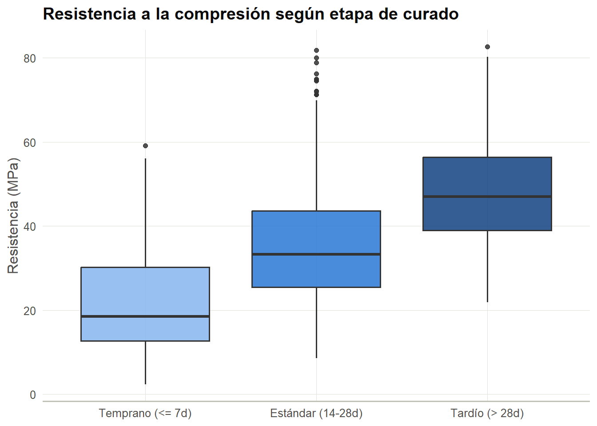
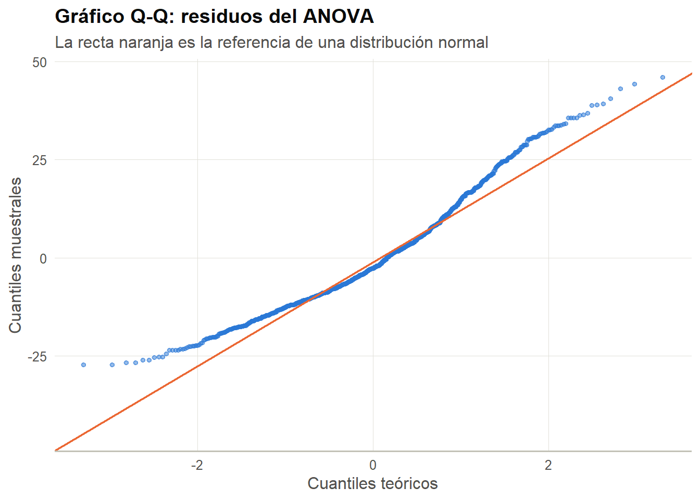
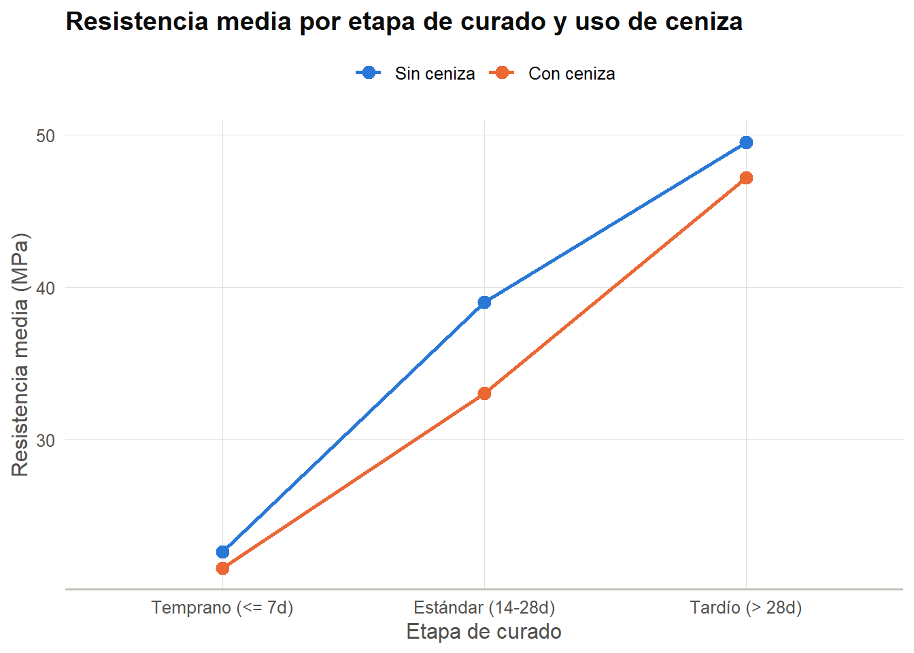

Capítulo 6 Resistencia según las etapas de curado
Este capítulo desarrolla el objetivo específico 3: evaluar las diferencias de resistencia entre las etapas de curado (temprana, estándar y tardía) mediante análisis de varianza y pruebas post-hoc.
6.1 Hipótesis
Sea \(\mu_T\), \(\mu_E\) y \(\mu_D\) la resistencia media en las etapas temprana, estándar y tardía.
\[H_0: \mu_T = \mu_E = \mu_D \qquad \text{vs.} \qquad H_1: \text{al menos una media difiere}\]
Nivel de significancia: \(\alpha = 0.05\).
6.2 Descripción por etapa
df_fe |>
group_by(etapa_curado) |>
summarise(
n = n(),
media = mean(resistencia),
sd = sd(resistencia),
mediana = median(resistencia),
.groups = "drop"
) |>
tabla_kbl("Resistencia (MPa) según etapa de curado")| etapa_curado | n | media | sd | mediana |
|---|---|---|---|---|
| Temprano (<= 7d) | 262 | 22.308 | 12.853 | 18.519 |
| Estándar (14-28d) | 487 | 35.730 | 14.328 | 33.302 |
| Tardío (> 28d) | 281 | 48.566 | 13.469 | 46.932 |
df_fe |>
ggplot(aes(x = etapa_curado, y = resistencia, fill = etapa_curado)) +
geom_boxplot(alpha = 0.85, show.legend = FALSE) +
scale_fill_manual(values = cols_etapa) +
labs(
title = "Resistencia a la compresión según etapa de curado",
x = NULL,
y = "Resistencia (MPa)"
) +
tema_libro()
6.3 Supuestos del ANOVA
Se verifican con \(\alpha = 0.05\):
- Normalidad de los residuos. \(H_0\): los errores son normales, frente a \(H_1\): no lo son.
- Homogeneidad de varianzas (Levene). \(H_0: \sigma^2_T = \sigma^2_E = \sigma^2_D\), frente a \(H_1\): al menos una varianza difiere.
- Varianza constante (Breusch-Pagan). \(H_0\): la varianza de los errores es constante.
- Independencia. No se cumple del todo: una misma mezcla se ensaya a varias edades y por eso aparece en varias etapas de curado (sección 3.9.3). Es una estructura de mediciones repetidas, por lo que el ANOVA clásico es optimista; se verifica con errores estándar agrupados por mezcla.
modelo_anova <- aov(resistencia ~ etapa_curado, data = df_fe)
levene_etapa <- car::leveneTest(resistencia ~ etapa_curado, data = df_fe)
p_levene_etapa <- levene_etapa[["Pr(>F)"]][1]
supuestos_anova <- bind_rows(
fila_sup("Normalidad de los residuos", "Lilliefors",
"Los errores son normales", nortest::lillie.test(residuals(modelo_anova))$p.value),
fila_sup("Normalidad de los residuos", "Shapiro-Wilk",
"Los errores son normales", shapiro.test(residuals(modelo_anova))$p.value),
fila_sup("Igualdad de varianzas entre etapas", "Levene",
"Las varianzas de las tres etapas son iguales", p_levene_etapa),
fila_sup("Varianza constante", "Breusch-Pagan",
"Var(error) es constante", lmtest::bptest(modelo_anova)$p.value)
)
supuestos_anova |>
tabla_kbl("Verificación de supuestos del ANOVA de un factor", digits = 4)| supuesto | prueba | H0 | p_valor | decision |
|---|---|---|---|---|
| Normalidad de los residuos | Lilliefors | Los errores son normales | 0.0000 | Se rechaza H0 |
| Normalidad de los residuos | Shapiro-Wilk | Los errores son normales | 0.0000 | Se rechaza H0 |
| Igualdad de varianzas entre etapas | Levene | Las varianzas de las tres etapas son iguales | 0.3742 | No se rechaza H0 |
| Varianza constante | Breusch-Pagan | Var(error) es constante | 0.1359 | No se rechaza H0 |

Decisión sobre la prueba. Homogeneidad de varianzas: no se rechaza H0, por lo que el ANOVA clásico y Tukey son adecuados (\(p = 0.374\)). Como la normalidad de los residuos se rechaza o es dudosa, los resultados se respaldan con Kruskal-Wallis.
6.4 ANOVA
## Df Sum Sq Mean Sq F value Pr(>F)
## etapa_curado 2 93486 46743 247.8 <0.0000000000000002 ***
## Residuals 1027 193687 189
## ---
## Signif. codes: 0 '***' 0.001 '**' 0.01 '*' 0.05 '.' 0.1 ' ' 1# ANOVA de Welch (no asume varianzas iguales)
oneway.test(resistencia ~ etapa_curado, data = df_fe, var.equal = FALSE)##
## One-way analysis of means (not assuming equal variances)
##
## data: resistencia and etapa_curado
## F = 269.97, num df = 2.0, denom df = 598.7, p-value <
## 0.00000000000000022##
## Kruskal-Wallis rank sum test
##
## data: resistencia by etapa_curado
## Kruskal-Wallis chi-squared = 353.39, df = 2, p-value <
## 0.00000000000000022# Tamaño del efecto: eta cuadrado
ss <- summary(modelo_anova)[[1]][["Sum Sq"]]
eta_cuadrado <- ss[1] / sum(ss)
eta_cuadrado## [1] 0.3255388La etapa de curado explica el 33% de la variación de la resistencia (\(\eta^2 = 0.33\)), un efecto grande. La media sube de 22.3 MPa (temprano) a 35.7 (estándar) y a 48.6 MPa (tardío).
6.5 Pruebas post-hoc
# Games-Howell (robusta a varianzas desiguales)
rstatix::games_howell_test(df_fe, resistencia ~ etapa_curado)## # A tibble: 3 × 8
## .y. group1 group2 estimate conf.low conf.high p.adj p.adj.signif
## * <chr> <chr> <chr> <dbl> <dbl> <dbl> <dbl> <chr>
## 1 resistencia Temprano… Están… 13.4 11.0 15.8 5.01e-10 ****
## 2 resistencia Temprano… Tardí… 26.3 23.6 28.9 3.65e-10 ****
## 3 resistencia Estándar… Tardí… 12.8 10.4 15.3 3.18e-10 ****## Tukey multiple comparisons of means
## 95% family-wise confidence level
##
## Fit: aov(formula = resistencia ~ etapa_curado, data = df_fe)
##
## $etapa_curado
## diff lwr upr p adj
## Estándar (14-28d)-Temprano (<= 7d) 13.42212 10.95254 15.89171 0
## Tardío (> 28d)-Temprano (<= 7d) 26.25747 23.48929 29.02565 0
## Tardío (> 28d)-Estándar (14-28d) 12.83535 10.42065 15.25004 0Las tres etapas son distintas entre sí (todos los \(p < 0.001\)). La etapa estándar supera a la temprana en 13.4 MPa (IC 11.0 a 15.9), la tardía supera a la temprana en 26.3 MPa (IC 23.5 a 29.0) y la tardía supera a la estándar en 12.8 MPa (IC 10.4 a 15.3). A más curado, más resistencia.
6.6 Corrección por mezclas repetidas
Se contrasta el efecto de la etapa con errores estándar agrupados por mezcla. La prueba conjunta es un contraste de Wald: \(H_0: \beta_{\text{Estándar}} = \beta_{\text{Tardío}} = 0\) (las tres etapas tienen la misma resistencia media).
m_etapa <- lm(resistencia ~ etapa_curado, data = df_fe)
V_etapa <- vcov_cluster(m_etapa, df_fe$id_mezcla)
tabla_robusta(m_etapa, V_etapa, gl = n_distinct(df_fe$id_mezcla) - 1) |>
tabla_kbl("Efecto de la etapa con errores estándar agrupados por mezcla", digits = 4)| termino | estimacion | ee_robusto | t | p_valor |
|---|---|---|---|---|
| (Intercept) | 22.3082 | 1.1733 | 19.0126 | 0 |
| etapa_curadoEstándar (14-28d) | 13.4221 | 0.8791 | 15.2679 | 0 |
| etapa_curadoTardío (> 28d) | 26.2575 | 0.8244 | 31.8487 | 0 |
##
## Linear hypothesis test:
## etapa_curadoEstándar (14-28d)
## etapa_curadoTardío (> 28d) = 0
##
## Model 1: restricted model
## Model 2: resistencia ~ etapa_curado
##
## Note: Coefficient covariance matrix supplied.
##
## Res.Df Df F Pr(>F)
## 1 1029
## 2 1027 2 533.61 < 0.00000000000000022 ***
## ---
## Signif. codes: 0 '***' 0.001 '**' 0.01 '*' 0.05 '.' 0.1 ' ' 1Sí. Al tener en cuenta las mezclas repetidas, la diferencia entre etapas sigue siendo muy significativa (\(F = 534\), \(p < 0.001\)). El efecto es tan grande que la corrección no cambia la conclusión.
6.7 ¿Depende el efecto de la ceniza de la etapa de curado?
El problema planteado en la introducción es si la ceniza compromete la resistencia a edades tempranas y la mejora en edades tardías. Eso es una interacción entre el uso de ceniza y la etapa de curado, que se evalúa con un ANOVA de dos factores.
df_fe |>
group_by(usa_ceniza, etapa_curado) |>
summarise(n = n(), media = mean(resistencia), sd = sd(resistencia), .groups = "drop") |>
tabla_kbl("Resistencia (MPa) por uso de ceniza y etapa de curado")| usa_ceniza | etapa_curado | n | media | sd |
|---|---|---|---|---|
| Sin ceniza | Temprano (<= 7d) | 183 | 22.633 | 13.855 |
| Sin ceniza | Estándar (14-28d) | 219 | 39.020 | 15.809 |
| Sin ceniza | Tardío (> 28d) | 164 | 49.546 | 15.340 |
| Con ceniza | Temprano (<= 7d) | 79 | 21.556 | 10.203 |
| Con ceniza | Estándar (14-28d) | 268 | 33.042 | 12.390 |
| Con ceniza | Tardío (> 28d) | 117 | 47.192 | 10.196 |
df_fe |>
group_by(usa_ceniza, etapa_curado) |>
summarise(media = mean(resistencia), .groups = "drop") |>
ggplot(aes(x = etapa_curado, y = media, color = usa_ceniza, group = usa_ceniza)) +
geom_line(linewidth = 1) +
geom_point(size = 3) +
scale_color_manual(values = cols_ceniza) +
labs(
title = "Resistencia media por etapa de curado y uso de ceniza",
x = "Etapa de curado",
y = "Resistencia media (MPa)",
color = NULL
) +
tema_libro()
Supuestos del ANOVA de dos factores (\(\alpha = 0.05\)): normalidad de los residuos (\(H_0\): los errores son normales) y homogeneidad de varianzas entre las seis combinaciones (Levene, \(H_0\): todas las varianzas son iguales).
modelo_dos_factores <- aov(resistencia ~ usa_ceniza * etapa_curado, data = df_fe)
df_celdas <- df_fe |> mutate(celda = interaction(usa_ceniza, etapa_curado))
bind_rows(
fila_sup("Normalidad de los residuos", "Shapiro-Wilk",
"Los errores son normales", shapiro.test(residuals(modelo_dos_factores))$p.value),
fila_sup("Igualdad de varianzas entre celdas", "Levene",
"Las varianzas de las seis celdas son iguales",
car::leveneTest(resistencia ~ celda, data = df_celdas)[["Pr(>F)"]][1]),
fila_sup("Varianza constante", "Breusch-Pagan",
"Var(error) es constante", lmtest::bptest(modelo_dos_factores)$p.value)
) |>
tabla_kbl("Verificación de supuestos del ANOVA de dos factores", digits = 4)| supuesto | prueba | H0 | p_valor | decision |
|---|---|---|---|---|
| Normalidad de los residuos | Shapiro-Wilk | Los errores son normales | 0 | Se rechaza H0 |
| Igualdad de varianzas entre celdas | Levene | Las varianzas de las seis celdas son iguales | 0 | Se rechaza H0 |
| Varianza constante | Breusch-Pagan | Var(error) es constante | 0 | Se rechaza H0 |
El diseño es desbalanceado (las seis celdas tienen tamaños distintos), así que el ANOVA secuencial (Tipo I) dependería del orden en que entran los factores. Se usan sumas de cuadrados Tipo II, que evalúan cada efecto principal ajustado por el otro:
## Anova Table (Type II tests)
##
## Response: resistencia
## Sum Sq Df F value Pr(>F)
## usa_ceniza 3627 1 19.6556 0.00001027 ***
## etapa_curado 95969 2 260.0669 < 0.00000000000000022 ***
## usa_ceniza:etapa_curado 1123 2 3.0432 0.04811 *
## Residuals 188937 1024
## ---
## Signif. codes: 0 '***' 0.001 '**' 0.01 '*' 0.05 '.' 0.1 ' ' 1Si estos supuestos fallan, la interacción debe confirmarse con un modelo que corrija la escala de la respuesta; ese análisis se hace en el capítulo 8, donde se transforma la respuesta y se verifican los supuestos de forma completa.
La interacción apenas es significativa (\(p = 0.048\)), y los supuestos de este análisis simple no se cumplen, así que no conviene apoyarse solo en él. Lo que sí muestran las medias es que la diferencia con y sin ceniza cambia según la etapa: casi igual en la temprana (22.6 frente a 21.6 MPa), 6 MPa menos con ceniza en la estándar (39.0 frente a 33.0) y 2 MPa menos en la tardía (49.5 frente a 47.2). Por eso el efecto de la ceniza no se puede resumir con un único número. La confirmación está en el análisis siguiente y en el capítulo 8.
6.8 Interacción ajustada por covariables
Para descartar que la interacción sea producto de que las recetas con ceniza usan menos cemento o más superplastificante, se compara un modelo con y sin interacción controlando por esos ingredientes.
m_sin_inter <- lm(
resistencia ~ ceniza + etapa_curado + cemento + escoria + agua + superplast,
data = df_fe
)
m_con_inter <- lm(
resistencia ~ ceniza * etapa_curado + cemento + escoria + agua + superplast,
data = df_fe
)
anova(m_sin_inter, m_con_inter)## Analysis of Variance Table
##
## Model 1: resistencia ~ ceniza + etapa_curado + cemento + escoria + agua +
## superplast
## Model 2: resistencia ~ ceniza * etapa_curado + cemento + escoria + agua +
## superplast
## Res.Df RSS Df Sum of Sq F Pr(>F)
## 1 1022 53033
## 2 1020 52036 2 997.06 9.7722 0.00006254 ***
## ---
## Signif. codes: 0 '***' 0.001 '**' 0.01 '*' 0.05 '.' 0.1 ' ' 1coef_inter <- summary(m_con_inter)$coefficients
tibble(
termino = rownames(coef_inter),
estimacion = coef_inter[, "Estimate"],
error_est = coef_inter[, "Std. Error"],
t = coef_inter[, "t value"],
p_valor = coef_inter[, "Pr(>|t|)"]
) |>
tabla_kbl("Coeficientes del modelo con interacción ceniza x etapa (escala original, MPa)", digits = 4)| termino | estimacion | error_est | t | p_valor |
|---|---|---|---|---|
| (Intercept) | 12.8564 | 3.0039 | 4.2800 | 0.0000 |
| ceniza | 0.0523 | 0.0086 | 6.0466 | 0.0000 |
| etapa_curadoEstándar (14-28d) | 17.3722 | 0.6973 | 24.9130 | 0.0000 |
| etapa_curadoTardío (> 28d) | 26.9415 | 0.7680 | 35.0781 | 0.0000 |
| cemento | 0.1118 | 0.0029 | 38.0428 | 0.0000 |
| escoria | 0.0880 | 0.0034 | 25.7951 | 0.0000 |
| agua | -0.1850 | 0.0150 | -12.3706 | 0.0000 |
| superplast | 0.0704 | 0.0597 | 1.1792 | 0.2386 |
| ceniza:etapa_curadoEstándar (14-28d) | -0.0164 | 0.0094 | -1.7505 | 0.0803 |
| ceniza:etapa_curadoTardío (> 28d) | 0.0226 | 0.0105 | 2.1402 | 0.0326 |
Al controlar por los ingredientes, la interacción es clara (\(p < 0.001\)). Cada kg/m³ de ceniza agregado, sin quitar cemento, aporta +0.052 MPa en la etapa temprana, +0.036 en la estándar y +0.075 en la tardía. Dicho en 100 kg/m³: +5.2, +3.6 y +7.5 MPa. La ceniza ayuda en las tres etapas, menos en la estándar y más en la tardía.
6.9 Conclusión parcial del objetivo 3
- Etapa de curado: es el factor más fuerte. Explica el 33% de la variación y la resistencia sube de 22 a 36 y a 49 MPa. Las diferencias se mantienen al corregir por mezclas repetidas.
- Ceniza por etapa: el efecto de la ceniza depende de la etapa. Cuando se controla por los demás ingredientes, aporta resistencia en las tres, sobre todo en la tardía.